10 個分類 · 91 種 2D + 9 種 3D每張圖取自實際播放畫面。點選效果，開啟動態預覽並調整參數。
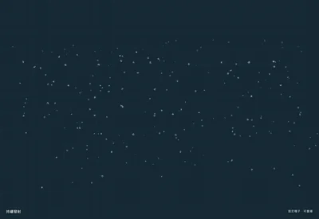
冬季地圖、庭院與節慶背景
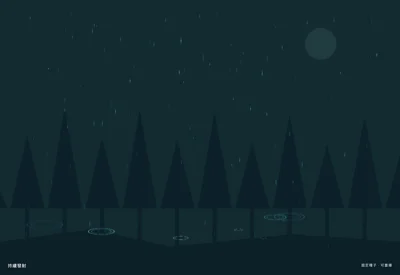
城市街道、窗外雨景
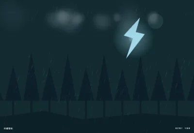
暴風雨與危險區域
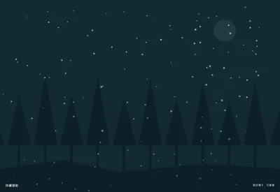
冰雹天氣與冰元素區域
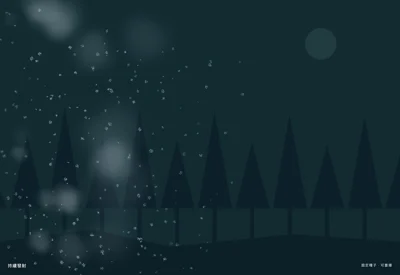
雪山暴風與高速行進
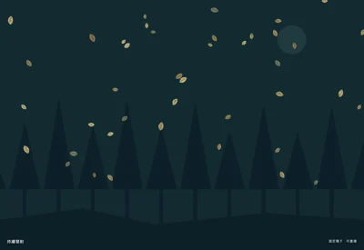
森林、庭院與秋季轉場
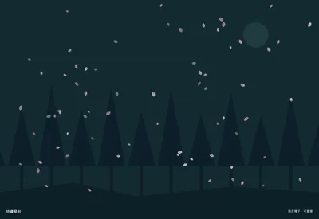
花園、戀愛與春季場景
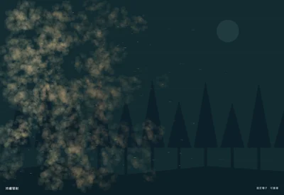
沙漠風沙、荒原視線遮蔽
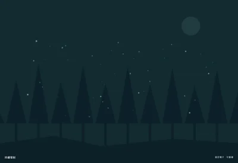
夜間森林與小型生物環境光
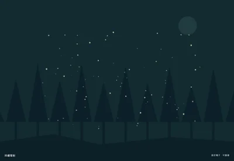
室外光束中的環境微粒
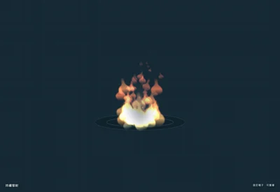
火源、陷阱與燃燒狀態
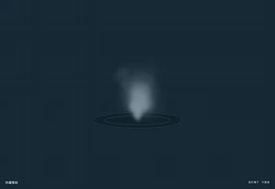
煙霧、殘煙與環境排放
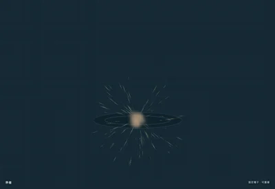
爆炸衝擊與延遲煙塵
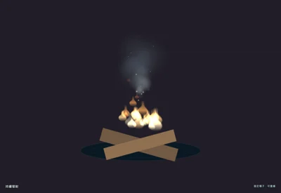
營地、篝火與休息區
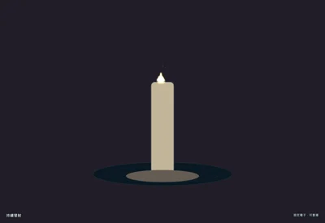
蠟燭、祭壇與小型室內火源
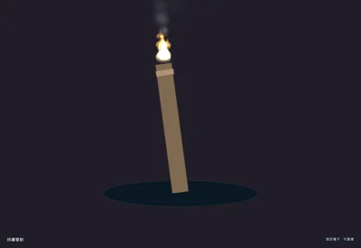
地下城壁燈、移動照明
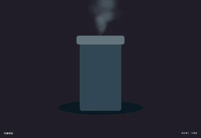
工廠、列車與工業背景
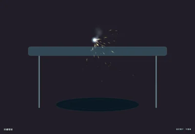
維修、工業加工與切割
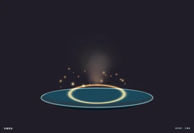
火山口、岩漿池與熔爐
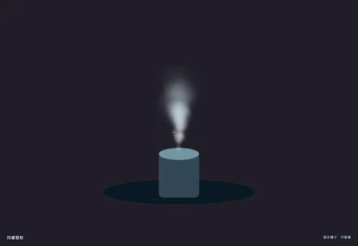
鍋爐、管道釋壓與蒸汽機
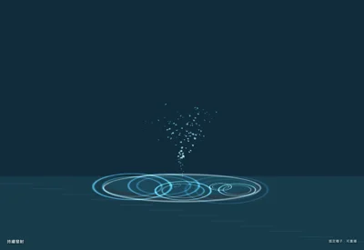
花園水景與城市噴泉
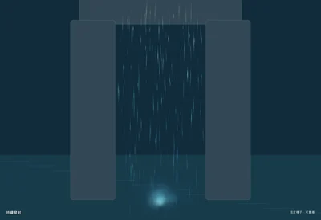
溪流瀑布與場景水幕
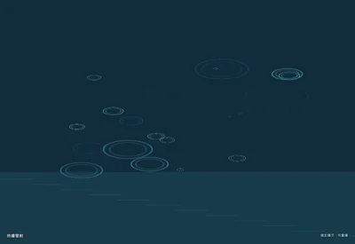
水面雨點、池塘與濕地
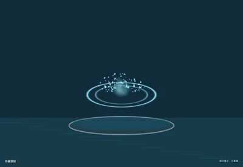
入水、濺水與水彈命中
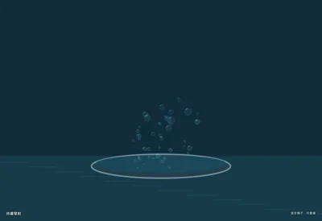
藥水鍋、水槽與海底氣泡
水下懸浮微粒與散射氣泡
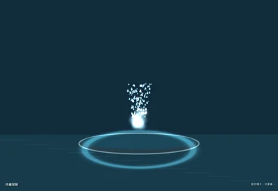
溫泉噴發與地形機關
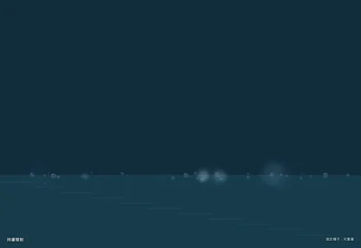
海浪拍岸與船尾泡沫
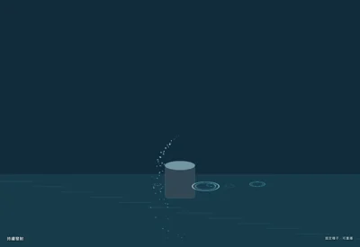
草地澆水與花園機關
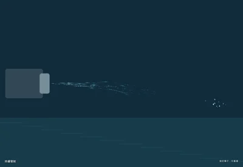
消防水槍、清洗與機械噴流
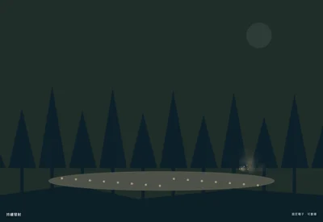
角色腳步與乾燥地面
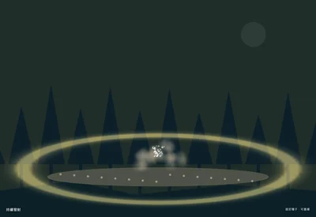
落地、重擊與衝擊範圍
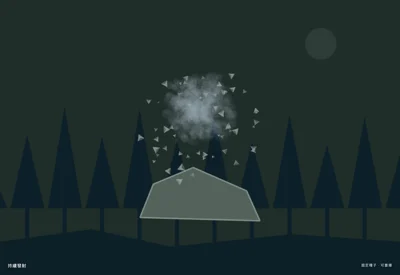
採礦、破牆與岩石破壞
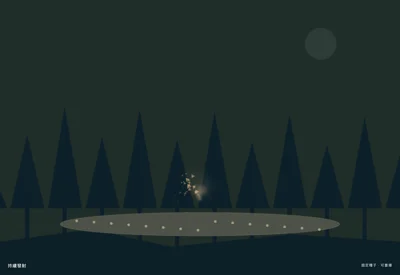
鏟土、鑽地與地下生物
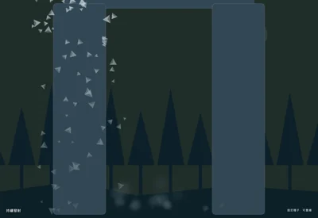
山壁崩落與礦坑作業
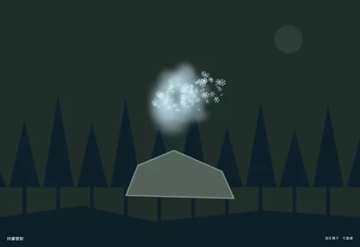
雪坡塌落與冰雪爆破
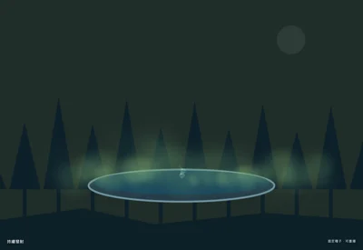
沼澤、腐蝕地帶與毒池
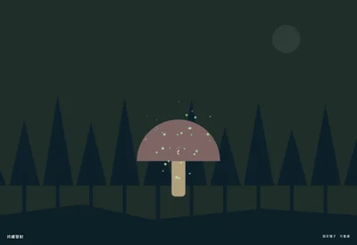
蘑菇森林、花粉陷阱與生態循環
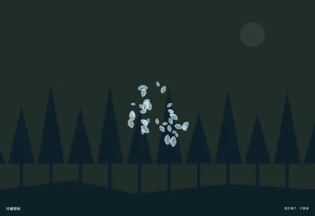
羽翼受擊、鳥類起飛與柔和轉場
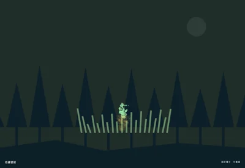
草叢互動、收割與斬擊草地
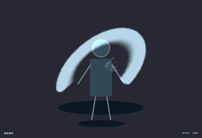
近戰揮砍與連段提示
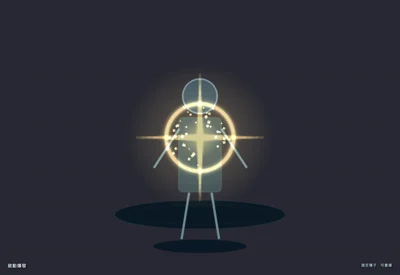
暴擊、弱點命中與破防
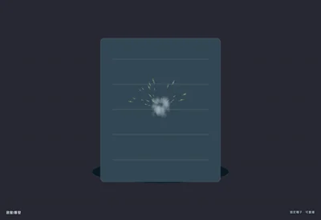
子彈撞擊牆面與掩體
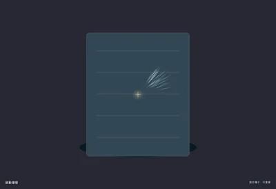
裝甲彈開與金屬撞擊
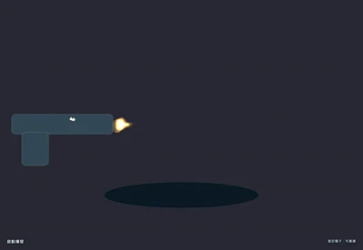
射擊開火與武器出膛
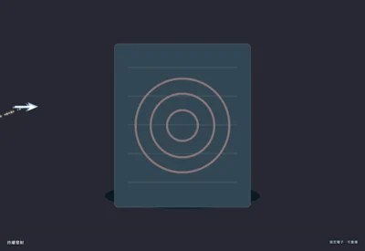
弓箭、投射物與軌跡預判
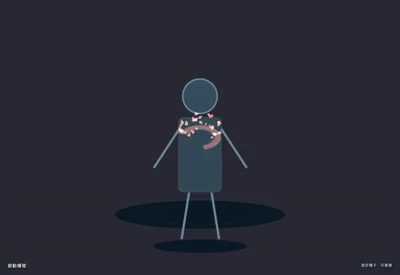
角色受擊與傷害提示
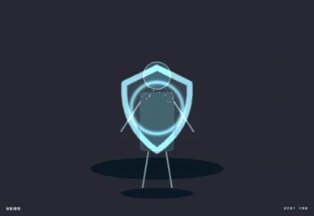
招架、格擋與防禦成功
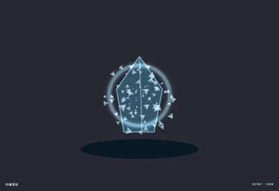
冰凍破除、冰牆與冰甲
火球爆散、火系技能與燃燒打擊
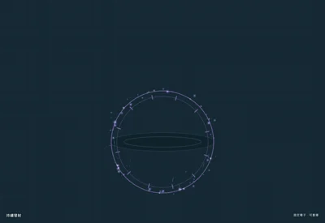
持續增益、角色狀態與魔力區域
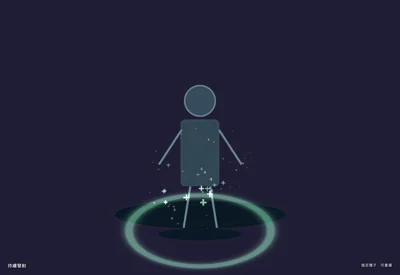
生命恢復與治療法術
施法蓄力與法力補充
場景傳送與空間入口
召喚、施法落點與技能預警
落雷、電系技能與擊中閃爍
凍結區域與冰系施法
吸引範圍、黑洞與黑魔法
施毒、詛咒與持續傷害
復活、神聖技能與稀有獎勵
設備損壞、電箱與電力警示
能量反應爐與核心過載
持續能量武器與聚能裝置
雷射槍、機關炮與掃射
角色傳送、生成與掃描重建
資訊面板、投影裝置與指示圖
敵人消散、資料刪除與重建
太空船、機械噴口與噴射背包
警報器、危險標記與搜尋區域
磁力裝置、能量線與科幻控制
按鈕點擊、觸控與游標回饋
操作成功、任務確認與表單回饋
操作失敗、錯誤輸入與無效目標
功能解鎖、寶箱與成就開啟
角色升級、天賦突破與裝備強化
等待狀態、載入指示與循環提示
目標選中、物品聚焦與滑鼠懸停
任務獎勵、里程碑與章節結算
補血道具、生命球與治療拾取
護盾恢復、裝甲補充與防禦增益
獎勵、拾取與結算動畫
慶祝、勝利與完成事件
慶典煙火、節日與勝利展示
好感度、直播互動與情感回饋
評分、收集與連續成功
戰利品、寶箱與抽取獎勵
寶石掉落、稀有素材與採集獎勵
活動開場、派對與慶祝轉場
舞台冷焰火、頒獎與慶典邊框
節日夜景、祝福與遠景點綴
俯視動作、衝刺與角色加速
車頭起流、全車包覆與追車尾流
立體推進器、飛船與機械噴流
隧道躍遷、空間穿梭與高速通行
立體水池、廣場與庭院水景
立體傳送門與空間裝置
立體爆破、衝擊與火花散射
立體場景、前後景雪花與天候
立體營火、火源與煙柱
立體流星、導彈與遠景飛行物